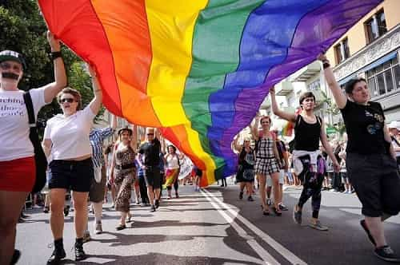

< < < Back
Study: Homosexuals And Bisexuals Are More Likely To Be Mentally Ill, Drug Abusers – Return Of Kings
It’s summer now, and in Sweden that means it’s pride parade season. One thing that’s different this year is that the very gay Milo Yiannopoulos is coming here to lead a parade on July 27th. The reason is that this particular parade will go through Tensta, a suburb comprised of mostly immigrants, a lot of them Muslim. We’ll see how that goes.
In other gay news: a new survey has found excess health problems in gays, lesbians and bisexuals. These groups reported more health problems than straight men and women.
More prone to smoking and heavy drinking
The study was done in the US, with nearly 69,000 participants. The National Health Interview Survey has been around for many years, but in 2013 and 2014 it included a question about sexual orientation for the first time.
The researchers conclude that gay, lesbian and bisexual adults “were more likely to report impaired physical and mental health, heavy alcohol consumption, and heavy cigarette use, potentially due to the stressors that (they) experience as a result of interpersonal and structural discrimination.”
The results show that lesbians, compared to heterosexual women, are 91 percent more likely to report poor or fair health. Lesbians are also 51 percent more likely, and bisexual women more than twice as likely, to report multiple chronic conditions, compared to straight women.
Gays, lesbians and bisexuals are more likely to indulge in heavy drinking and smoking. 26 percent of gay men and about 40 percent of bisexual men reported at least moderate psychological distress, compared to about 17 percent of heterosexual men.
In the case of women, about 22 percent of heterosexuals had at least moderate psychological distress, compared to about 28 percent of lesbians and about 46 percent of bisexuals.
Last year’s parade through the immigrant neigborhoods.
Gilbert Gonzales of the Vanderbilt University School of Medicine in Nashville, who worked with this study, thinks so-called “minority stress” may account for health differences between heterosexuals and gay, lesbian and bisexual people. He thinks bisexuals have it worse than the rest because they may not always be accepted by gay, lesbian and transgender communities.
Right off the bat, you know the researchers aren’t exactly unbiased in this matter, since they talk about “structural discrimination” of these minority groups in America, a country where they are constantly praised in the media and by the elites. But leaving that aside, their study does show some interesting results.
I can’t say that I’m surprised. There are many possible reasons why the LGB (and likely also T) community is having more psychological problems than heterosexuals. One reason could be that some people do treat them badly on account of them being so strange (there’s a reason why they’re called queers). If they insist on acting act out their weird sexual desires in public, it’s understandable that some will take offense to that.

This is the kind of sick stuff we have to deal with.
Some might even go so far as to discriminate against them. A business owner with more traditional values might deny them service—for instance, refuse to be the host of a gay wedding. That could well cause the gay couple to feel distress. (Although I would say that that’s the business owner’s right in a free country.)
But I would argue that there are other factors that affect LGBT people’s mental health more than real life discrimination, which can’t be that common in Western countries. The fact that their situation is often described as a lot more bleak than it is, is something that surely must affect them in a negative way. If they’re constantly being told about how oppressed they are by white, cisgender men, and “the religious right” (but not Muslims, we can’t say that), then of course they’re gonna be worried about their safety and future.
In the same way, if you tell a black person enough times that the police are after him and want to shoot him to death, for nothing more than walking down the street, eventually he’s going to believe it and start resenting cops and society in general.

They’re here, they’re queer, I can’t get used to it.
Why celebrate sexual deviance?
But there’s one other factor that I want to bring to this discussion. I’m not a scientist like Gilbert Gonzales, and I’m definitely going to sound like a prejudiced asshole saying this (although it wouldn’t be the first time), but I think there’s something fundamentally wrong with gays, lesbians and bisexuals. Wrong in the sense that they weren’t created as they were supposed to be.
People are, like all animals, supposed to mate with each other, otherwise we wouldn’t still be here. Hence, we’re meant to be heterosexuals. Ergo, gays, lesbians and bisexuals were born with a faulty constitution. And since they’re faulty, it’s no wonder if that reflects on their mental condition.
I’m not saying that there’s necessarily something morally wrong with being gay, just that they’re a small minority of the populace for a reason. It’s not something we should encourage people to be—the results of the study presented above support that case.
Should someone feel pride over being born faulty? Should it be paraded around in the street like it’s something we should celebrate? Should we embrace a condition that impedes our species’ ability to survive? I’m not sure I can agree with that.
 If you like this article and are concerned about the future of the Western world, check out Roosh's book Free Speech Isn't Free. It gives an inside look to how the globalist establishment is attempting to marginalize masculine men with a leftist agenda that promotes censorship, feminism, and sterility. It also shares key knowledge and tools that you can use to defend yourself against social justice attacks. Click here to learn more about the book. Your support will help maintain our operation.
If you like this article and are concerned about the future of the Western world, check out Roosh's book Free Speech Isn't Free. It gives an inside look to how the globalist establishment is attempting to marginalize masculine men with a leftist agenda that promotes censorship, feminism, and sterility. It also shares key knowledge and tools that you can use to defend yourself against social justice attacks. Click here to learn more about the book. Your support will help maintain our operation.
Read More: 5 Reasons Why Bisexuals Cannot Be Taken Seriously